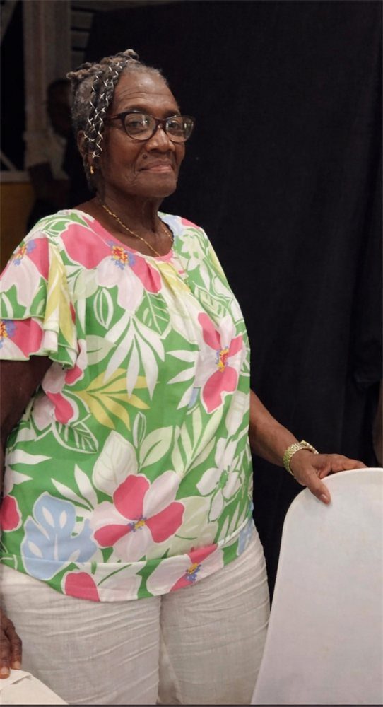

← All obituaries
Coral

In loving memory
Coral
Oneta Franklyn
Aged 77 · Entered rest Wednesday, April 15th, 2026
In memory
Affectionately known as “Ma”.
Of Clarke’s Gap, Spooners Hill, St. Michael.
Family
- Daughter of Grizelda Franklyn and John Belle.
- Beloved mother of Joyann Franklyn of Best E Villas and Andrea Franklyn (Diva the Salon).
- Loving grandmother of Shawn Charlery and Blair Taylor, Deann Walton.
- Cherished sister of Everton, Anthony Snr, Frankie, Maria and Andrew Franklyn and Rev.Cheryl Franklyn- Row (Canada).
- Dear aunt of Alicia Franklyn-Zink (Netherlands), Vanessa Husbands, Kristine Babb, Rhianne Gill, Anthony Jnr, Antonio, Andre, Ryan and Ariel Franklyn.
- Great aunt of Cody Green, Ziahera Hoyte, Jaythan, Tessanee, and Kayden Zink, Rashawn, Shania and Azaina Franklyn.
- Adored sister-in-law of Rev. Kelly Row (Canada), Everlina Franklyn and Andrew Haynes.
- God mother of Mark Haynes and Sumentra Yarde.
- Mother and grandmother figure of Sonia, Kashia and Shannell Worrell, Sharon Murrell, Miriam Jordan, Dr Khalila Worrell- Grant, Lemar Goddard, Khalia Doughty and Leon Harper.
- Relative of the Haynes family (USA) and the late Samuel Franklyn and family of Sion Hill.
- Dearest friend of Muriel Carrington, Barbara Worrell, Wavney Greaves, Norma and Maureen Forde, Fredine Massiah, Marvo Hope, Marion Bovell, Jackie Leacock, George Greenidge (USA), Ryan Wood the Lowe and Bartlett families and many others too numerous to mention.
Whenever you need us
We’re here, 24 hours a day.
When you are ready to talk, a caring member of our team is only a call or message away.